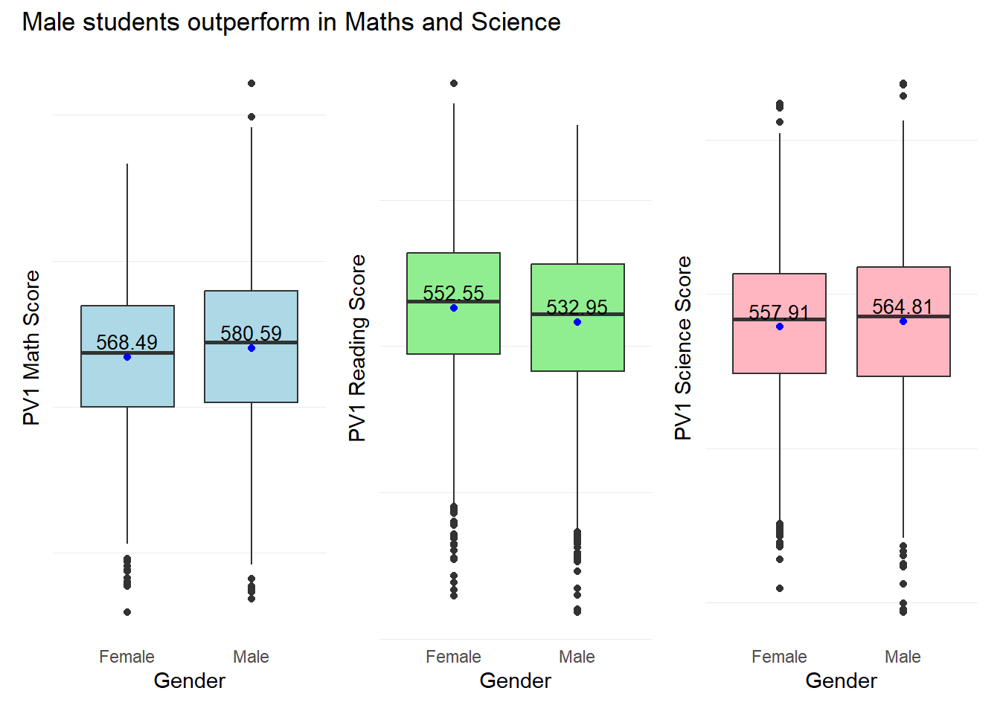
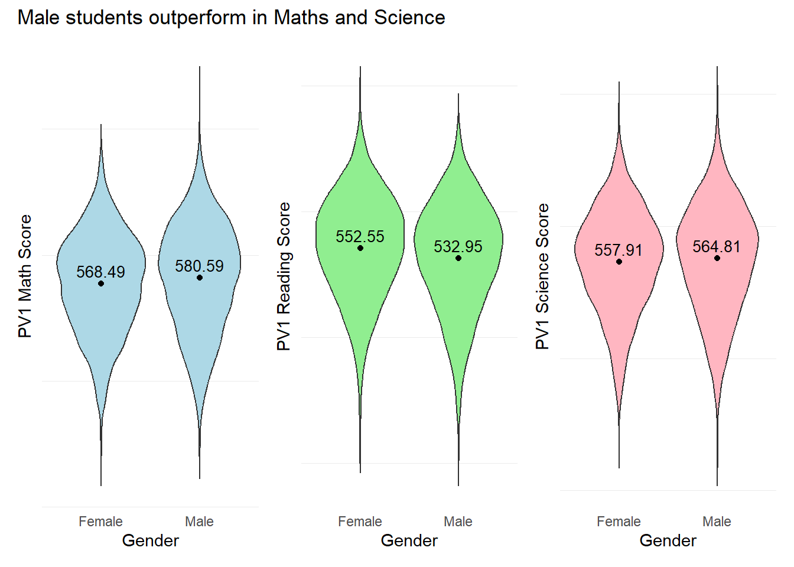

pacman::p_load(tidyverse, haven)Take-Home Exercise 1
Creating data visualisation beyond default
Setting the Scene
OECD education director Andreas Schleicher shared in a BBC article that “Singapore managed to achieve excellence without wide differences between children from wealthy and disadvantaged families.” (2016) Furthermore, several of Singapore’s ministers for Education also started an “every school a good school” slogan. The general public, however, believes that there are still disparities that exist, especially between “elite” and neighborhood schools, between students from families with higher socioeconomic status and those with relatively lower socioeconomic status and immigration and non-immigration families.
The Task
The 2022 Programme for International Student Assessment (PISA) data was released on December 5, 2022. PISA’s global education survey runs every three years to assess education systems worldwide through the testing 15 year old students in the subjects of mathematics, reading, and science.
In this take-home exercise, we will use appropriate Exploratory Data Analysis (EDA) methods and ggplot2 functions to reveal:
the distribution of Singapore students’ performance in mathematics, reading, and science, and
the relationship between these performances with schools, gender and socioeconomic status of the students.
The Data
The PISA 2022 database contains the full set of responses from individual students, school principals and parents. There are a total of five data files and their contents are as follows:
Student questionnaire data file
School questionnaire data file
Teacher questionnaire data file
Cognitive item data file
Questionnaire timing data file
These data files are in SAS and SPSS formats. For the purpose of this assignment, we will use the Student questionnaire data file only.
To learn more about PISA 2022 survey, please refer to the PISA 2022 Technical Report
1. Getting Started
1.1 Loading R packages
1.2 Importing PISA data
The code chunk below uses ‘read_sas()’ of haven to import PISA data into the R environment.
stu_qqq <- read_sas("data/cy08msp_stu_qqq.sas7bdat")Upon first import, as the student questionaire data file contains data from other countries, we will use filter() to filter the data file to only Singapore data.
stu_qqq_SG <- stu_qqq %>%
filter(CNT == "SGP")We use write_rds() to save the filtered datafile to a seperate file called stu_qqq_SG
write_rds(stu_qqq_SG,
"data/stu_qqq_SG.rds")For our analysis we shall read in data from stu_qqq_SG.rds using read_rds()
stu_qqq_SG <- read_rds("data/stu_qqq_SG.rds")1.3 Installing and Loading R instvy
The R package intsvy allows R users to analyse PISA data among other international large-scale assessments. The use of PISA data via R requires data preparation, and intsvy offers a data transfer function to import data available in other formats directly into R. Intsvy also provides a merge function to merge the student, school, parent, teacher and cognitive databases.
To understand more about the packages available and the methodology to analyse the PISA data files, please refer to this link.
The analytical commands within intsvy enables users to derive mean statistics, standard deviations, frequency tables, correlation coefficients and regression estimates.
Additionally, intsvy deals with the calculation of point estimates and standard errors that take into account the complex PISA sample design with replicate weights, as well as the rotated test forms with plausible values.
To understand more about the instvy package, please refer to this link.
#install.packages("intsvy",repos = "http://cran.us.r-project.org")We will load the package using library()
library("intsvy")1.2 Data preparation
Checking the data set structure.
head(stu_qqq_SG)# A tibble: 6 × 1,279
CNT CNTRYID CNTSCHID CNTSTUID CYC NatCen STRATUM SUBNATIO REGION OECD
<chr> <dbl> <dbl> <dbl> <chr> <chr> <chr> <chr> <dbl> <dbl>
1 SGP 702 70200052 70200001 08MS 070200 SGP01 7020000 70200 0
2 SGP 702 70200134 70200002 08MS 070200 SGP01 7020000 70200 0
3 SGP 702 70200112 70200003 08MS 070200 SGP01 7020000 70200 0
4 SGP 702 70200004 70200004 08MS 070200 SGP01 7020000 70200 0
5 SGP 702 70200152 70200005 08MS 070200 SGP01 7020000 70200 0
6 SGP 702 70200043 70200006 08MS 070200 SGP01 7020000 70200 0
# ℹ 1,269 more variables: ADMINMODE <dbl>, LANGTEST_QQQ <dbl>,
# LANGTEST_COG <dbl>, LANGTEST_PAQ <dbl>, Option_CT <dbl>, Option_FL <dbl>,
# Option_ICTQ <dbl>, Option_WBQ <dbl>, Option_PQ <dbl>, Option_TQ <dbl>,
# Option_UH <dbl>, BOOKID <dbl>, ST001D01T <dbl>, ST003D02T <dbl>,
# ST003D03T <dbl>, ST004D01T <dbl>, ST250Q01JA <dbl>, ST250Q02JA <dbl>,
# ST250Q03JA <dbl>, ST250Q04JA <dbl>, ST250Q05JA <dbl>, ST250D06JA <chr>,
# ST250D07JA <chr>, ST251Q01JA <dbl>, ST251Q02JA <dbl>, ST251Q03JA <dbl>, …There are a total of 6,606 rows and 1,279 columns in this data file.
data_dimensions <- dim(stu_qqq_SG)
#Display the number of rows and columns
data_dimensions[1] 6606 1279Checking for Na values. There are a large number of NA values in the data file.
sum(is.na(stu_qqq_SG))[1] 4168500Checking for duplicated rows using duplicated(). There are no duplicated rows in the data file.
stu_qqq_SG[duplicated(stu_qqq_SG),]# A tibble: 0 × 1,279
# ℹ 1,279 variables: CNT <chr>, CNTRYID <dbl>, CNTSCHID <dbl>, CNTSTUID <dbl>,
# CYC <chr>, NatCen <chr>, STRATUM <chr>, SUBNATIO <chr>, REGION <dbl>,
# OECD <dbl>, ADMINMODE <dbl>, LANGTEST_QQQ <dbl>, LANGTEST_COG <dbl>,
# LANGTEST_PAQ <dbl>, Option_CT <dbl>, Option_FL <dbl>, Option_ICTQ <dbl>,
# Option_WBQ <dbl>, Option_PQ <dbl>, Option_TQ <dbl>, Option_UH <dbl>,
# BOOKID <dbl>, ST001D01T <dbl>, ST003D02T <dbl>, ST003D03T <dbl>,
# ST004D01T <dbl>, ST250Q01JA <dbl>, ST250Q02JA <dbl>, ST250Q03JA <dbl>, …We next examine some columns for NA values. For example “PV1MATH”, “PV1SCIE”, “ESCS” and “PAREDINT”.
sum(is.na(stu_qqq_SG$PV1MATH))[1] 0sum(is.na(stu_qqq_SG$PV1SCIE))[1] 0sum(is.na(stu_qqq_SG$ESCS))[1] 47sum(is.na(stu_qqq_SG$PAREDINT))[1] 57
Note
From our initial checks, we noted that there are many columns/variables with missing values.
However, rather than checking for all missing values, and deleting them; we will continue to maintain the original data file. This will enable us to maintain the integrity of the data set which is crucial for us to be able to compute and derive statistics from variables like Plausible Values for test scores in Math, Reading and Science. Subsequently we will ‘clean’ the data for each subsequent EDA visualization.
Important
The columns in the PISA data set are named in a specific format. For more information on what each Variable label means, please refer to the questionnaire or code book at this link.
The variable values are both continuous and discrete.
1.2.1 Working with Plausible Values
PISA reports student performance through plausible values (PVs), obtained from Item Response Theory models (for details, see Chapter 5 of the PISA Data Analysis Manual: SAS or SPSS, Second Edition or the associated guide “Scaling of Cognitive Data and Use of Students Performance Estimates”).
An accurate and efficient way of measuring proficiency estimates in PISA requires five steps:
Compute estimates for each Plausible Values (PV)
Compute final estimate by averaging all estimates obtained from (1)
Compute sampling variance (unbiased estimate are providing by using only one PV)
Compute imputation variance (measurement error variance, estimated for each PV and then average over the set of PVs)
Compute final standard error by combining (3) and (4)
For more information, please refer to this link.
To obtain the correct mean scores for Math, Reading and Science, we will use the pisa.mean.pv() function from 'instvy' package like below.
Math_mean_SG <- pisa.mean.pv(pvlabel = paste0("PV",1:10,"MATH"), by="CNT", data=stu_qqq_SG)
Read_mean_SG <- pisa.mean.pv(pvlabel = paste0("PV",1:10,"READ"), by="CNT", data=stu_qqq_SG)
SCIE_mean_SG <- pisa.mean.pv(pvlabel = paste0("PV",1:10,"SCIE"), by="CNT", data=stu_qqq_SG)print(Math_mean_SG) CNT Freq Mean s.e. SD s.e
1 SGP 6606 574.66 1.23 102.8 0.91print(Read_mean_SG) CNT Freq Mean s.e. SD s.e
1 SGP 6606 542.55 1.87 105.89 1.15print(SCIE_mean_SG) CNT Freq Mean s.e. SD s.e
1 SGP 6606 561.43 1.33 99.09 1.1These means scores can be corroborated at the following link (pages 310-315).
For a visual of the past performance of the mean scores for Singaporean students, please refer to this link.
We will use these calculated mean values from the 10 plausible values as an additional statistic (Mean) for our subsequent visualizations.
1.3 Exploratory Data Analysis
1.3.1 Distribution of student’s performance in Math, Reading and Science
The objective of this visualization is to examine if subject scores are normally distributed in general within the student population sampled in the PISA test.
Since there are 10 Plausible Values for the 3 subjects, we shall use the first plausible value, PV1 to visualize the distribution of scores for the subjects.
For the rationale of using one Plausible Value, instead of several or all for our explanatory analysis, please refer to the article on “How to deal with Plausible Values from International Large-scale assessments.”
Show the code
# Create the histogram plot with an annotated mean line using Math_mean_SG
plt1 <- ggplot(stu_qqq_SG, aes(x = PV1MATH)) +
geom_histogram(binwidth = 20, color = "white", fill='lightblue') +
labs(x = "PV1 Math Score",
y = "Frequency") +
geom_vline(xintercept = Math_mean_SG$Mean,
col = 'black',
size = 0.5,
linetype = "dashed") +
geom_text(aes(x = Math_mean_SG$Mean, y = 100, label = paste("Mean =", round(Math_mean_SG$Mean, 2))),
color = "black", hjust = -0.1, vjust = 5.2) + # Adjust label position
theme_minimal()
# Create the histogram plot with an annotated mean line using Read_mean_SG
plt2 <- ggplot(stu_qqq_SG, aes(x = PV1READ)) +
geom_histogram(binwidth = 20, color = "white", fill='lightgreen') +
labs(x = "PV1 Reading Score",
y = "Frequency") +
geom_vline(xintercept = Read_mean_SG$Mean,
col = 'black',
size = 0.5,
linetype = "dashed") +
geom_text(aes(x = Read_mean_SG$Mean, y = 100, label = paste("Mean =", round(Read_mean_SG$Mean, 2))),
color = "black", hjust = -0.1, vjust = 5.2) + # Adjust label position
theme_minimal()
# Create the histogram plot with an annotated mean line using Science_mean_SG
plt3 <- ggplot(stu_qqq_SG, aes(x = PV1SCIE)) +
geom_histogram(binwidth = 20, color = "white", fill='lightpink') +
labs(x = "PV1 Science Score",
y = "Frequency") +
geom_vline(xintercept = SCIE_mean_SG$Mean,
col = 'black',
size = 0.5,
linetype = "dashed") +
geom_text(aes(x = SCIE_mean_SG$Mean, y = 100, label = paste("Mean =", round(SCIE_mean_SG$Mean, 2))),
color = "black", hjust = -0.1, vjust = 5.2) + # Adjust label position
theme_minimal()
# Create a single plot with density plots for Math, Reading, and Science scores
plt4 <- ggplot(stu_qqq_SG, aes(x = PV1MATH, fill = "Math")) +
geom_density(alpha = 0.5) +
geom_density(data = stu_qqq_SG, aes(x = PV1READ, fill = "Reading"), alpha = 0.5) +
geom_density(data = stu_qqq_SG, aes(x = PV1SCIE, fill = "Science"), alpha = 0.5) +
labs(x = "Scores",
y = "Density") +
scale_fill_manual(values = c("Math" = "lightblue", "Reading" = "lightgreen", "Science" = "lightpink")) +
guides(fill = FALSE) + # Remove the legend
theme_minimal()plt1
plt2
plt3
plt4
Combined Visual of the distribution of scores in general
Show the code
library(patchwork)
patch1 <- (plt1+plt2) / (plt3+plt4) +
plot_annotation(
title = "Distribution of student performance in Math, Reading and Science")
patch1 & theme( axis.text.y = element_blank(),panel.grid.major = element_blank(),)
Observation 1
The distribution of scores resembles a normal distribution across all 3 subjects. Singaporean students seem to have a higher mean score In Mathematics relative to Reading and Science.
Further statistical tests like the Anderson-Darling or Shapiro-Wilk tests will need to be conducted to confirm the normality in distribution.
1.3.2 Relationship between Scores and Schools
The objective of this visualization is to examine the relationship between subject scores and the schools sampled in the PISA test.
We will use unique() and length() to obtain the number of unique schools in the data set.
unique_values <- unique(stu_qqq_SG$CNTSCHID)
length(unique_values)[1] 164There are 164 unique schools in this data set.
Next, we use the code below to plot our scatter plots.
Show the code
p1 <- ggplot(stu_qqq_SG, aes(x = CNTSCHID, y = PV1MATH)) +
geom_point(color = "lightblue", alpha = 0.5) +
geom_hline(yintercept = Math_mean_SG$Mean, color = "black", linetype = "dashed") +
annotate("text", x = Inf, y = Math_mean_SG$Mean, label = paste("Mean =", round(Math_mean_SG$Mean, 2)),
hjust = 1, vjust = -1) +
labs(x = "School ID",
y = "PV1 Math Score") +
theme_minimal()
p2 <- ggplot(stu_qqq_SG, aes(x = CNTSCHID, y = PV1READ)) +
geom_point(color = "lightgreen", alpha = 0.5) +
geom_hline(yintercept = Read_mean_SG$Mean, color = "black", linetype = "dashed") +
annotate("text", x = Inf, y = Read_mean_SG$Mean, label = paste("Mean =", round(Read_mean_SG$Mean, 2)),
hjust = 1, vjust = -1) +
labs(x = "School ID",
y = "PV1 Reading Score") +
theme_minimal()
p3 <- ggplot(stu_qqq_SG, aes(x = CNTSCHID, y = PV1SCIE)) +
geom_point(color = "lightpink", alpha = 0.5) +
geom_hline(yintercept = SCIE_mean_SG$Mean, color = "black", linetype = "dashed") +
annotate("text", x = Inf, y = SCIE_mean_SG$Mean, label = paste("Mean =", round(SCIE_mean_SG$Mean, 2)),
hjust = 1, vjust = -1) +
labs(x = "School ID",
y = "PV1 Science Score") +
theme_minimal()p1
p2
p3
Combined Visual of the distribution of scores across Schools
Show the code
patch2 <- p1/p2/p3 +
plot_annotation(
title = "Students seem to be performing equally across Schools")
patch2 & theme( axis.text.y = element_blank(),panel.grid.major = element_blank(),)
Observation 2
Across the 164 schools, students seem to be performing equally across the 3 subjects. There are no significant clusters that are different from each other, for example, a large number of schools which only have good scores or only poor scores.
Additional analysis could be done to examine if the highest and lowest performing students (in terms of scores) belong to the same type of schools.
Since this data set only contains students on students, there is no additional information on either the type of school or its resources.. Further analysis could incorporate other data sets to build a more complete analysis.
1.3.3 Relationship between Scores and Gender
The objective of this visualization is to examine the relationship between subject scores and gender within the students sampled in the PISA test.
The gender column of the data set is named as “ST004D01T” with values of 1=Female and 2=Male. Instead of renaming the column and values in the data set, we can create and assign a new table as a subset of the data. We will use instvy.table() from the instvy package.
Gender_Table <-intsvy.table(variable="ST004D01T", by="CNT", data=stu_qqq_SG, config=pisa_conf)
glimpse(Gender_Table)Rows: 2
Columns: 5
$ CNT <chr> "SGP", "SGP"
$ ST004D01T <fct> 1, 2
$ Freq <int> 3248, 3358
$ Percentage <dbl> 48.98, 51.02
$ Std.err. <dbl> 0.18, 0.18print(Gender_Table) CNT ST004D01T Freq Percentage Std.err.
1 SGP 1 3248 48.98 0.18
2 SGP 2 3358 51.02 0.18The gender proportion of the student population
We first examine the proportion of Males and Females within the student population.
Show the code
# Convert the gender variable to a factor with the appropriate labels
Gender_Table$ST004D01T <- factor(Gender_Table$ST004D01T, levels = c(1, 2), labels = c("Female", "Male"))
# Plot using ggplot
ggplot(Gender_Table, aes(x = ST004D01T, y = Percentage, fill = ST004D01T)) +
geom_bar(stat = "identity", position = "dodge") +
geom_text(aes(label = paste0(Percentage, "%")),
position = position_dodge(width = 0.9),
vjust = 12.0,
color = "black",
size = 3.5) +
labs(title = "The Gender proportion of the Student Population",
x = "Gender",
y = "Percentage %") +
scale_fill_manual(values = c("Female" = "pink", "Male" = "lightblue")) +
theme_minimal() +
theme(legend.position = "none") # This will remove the legend
The student sample population is made up of 51.02% males and 48.98% females.
The pisa.mean.pv() function from the instvy package enables us to calculate the mean scores from the 10 Plausible Values and enables us to further group by gender.
In the code below, we will create separate tables for the mean scores for each subject by different genders.
Show the code
Math_gender <- pisa.mean.pv(pvlabel = paste0("PV",1:10,"MATH"), by = "ST004D01T", data = stu_qqq_SG)
Math_gender$ST004D01T <- factor(Math_gender$ST004D01T, levels = c(1, 2), labels = c("Female", "Male"))
Read_gender <- pisa.mean.pv(pvlabel = paste0("PV",1:10,"READ"), by = "ST004D01T", data = stu_qqq_SG)
Read_gender$ST004D01T <- factor(Read_gender$ST004D01T, levels = c(1, 2), labels = c("Female", "Male"))
SCIE_gender <- pisa.mean.pv(pvlabel = paste0("PV",1:10,"SCIE"), by = "ST004D01T", data = stu_qqq_SG)
SCIE_gender$ST004D01T <- factor(SCIE_gender$ST004D01T, levels = c(1, 2), labels = c("Female", "Male"))print(Math_gender) ST004D01T Freq Mean s.e. SD s.e
1 Female 3248 568.49 1.65 97.62 1.14
2 Male 3358 580.59 1.75 107.20 1.33print(Read_gender) ST004D01T Freq Mean s.e. SD s.e
1 Female 3248 552.55 2.28 101.74 1.42
2 Male 3358 532.95 2.21 108.87 1.85print(SCIE_gender) ST004D01T Freq Mean s.e. SD s.e
1 Female 3248 557.91 1.94 95.10 1.68
2 Male 3358 564.81 1.93 102.66 1.30Next, we plot the PV1 scores by different genders to examine the performance of different genders across subjects.
Show the code
# Create a subset of the data with gender and PV1 score columns
subset_gender_PV1 <- stu_qqq_SG %>%
select(ST004D01T, PV1MATH, PV1SCIE, PV1READ)
# Convert the "ST004D01T" column to a factor
subset_gender_PV1$ST004D01T <- factor(subset_gender_PV1$ST004D01T, levels = c(1, 2), labels = c("Female", "Male"))
# Create the plot using the subset_data
bxp1 <- ggplot(subset_gender_PV1, aes(x = ST004D01T, y = PV1MATH, fill = ST004D01T)) +
geom_boxplot() +
geom_point(data = Math_gender, aes(x = ST004D01T, y = Mean), color = "blue", size = 1.5) +
geom_text(data = Math_gender, aes(x = ST004D01T, y = Mean, label = round(Mean, 2)),
color = "black", vjust = -0.5, size = 3.5) +
labs(x = "Gender",
y = "PV1 Math Score") +
scale_fill_manual(values = c("Female" = "lightblue", "Male" = "lightblue")) +
theme_minimal() +
theme(legend.position = "none") # Remove the legend
bxp2 <- ggplot(subset_gender_PV1, aes(x = ST004D01T, y = PV1READ, fill = ST004D01T)) +
geom_boxplot() +
geom_point(data = Read_gender, aes(x = ST004D01T, y = Mean), color = "blue", size = 1.5) +
geom_text(data = Read_gender, aes(x = ST004D01T, y = Mean, label = round(Mean, 2)),
color = "black", vjust = -0.5, size = 3.5) +
labs(x = "Gender",
y = "PV1 Reading Score") +
scale_fill_manual(values = c("lightgreen", "lightgreen")) + # Associate colors with factor levels
theme_minimal() +
theme(legend.position = "none") # Remove the legend
bxp3 <- ggplot(subset_gender_PV1, aes(x = ST004D01T, y = PV1SCIE, fill = ST004D01T)) +
geom_boxplot() +
geom_point(data = SCIE_gender, aes(x = ST004D01T, y = Mean), color = "blue", size = 1.5) +
geom_text(data = SCIE_gender, aes(x = ST004D01T, y = Mean, label = round(Mean, 2)),
color = "black", vjust = -0.5, size = 3.5) +
labs(x = "Gender",
y = "PV1 Science Score") +
scale_fill_manual(values = c("lightpink", "lightpink")) + # Associate colors with factor levels
theme_minimal() +
theme(legend.position = "none") # Remove the legendbxp1
bxp2
bxp3
Combined Visual of Performance across Genders
Show the code
patch3 <- bxp1 + bxp2 + bxp3 +
plot_annotation(
title = "Male students outperform in Maths and Science")
patch3 & theme( axis.text.y = element_blank(),panel.grid.major = element_blank(),)
Observation 3
Males students seem to outperform Female students in both Maths and Science with mean scores of 580.59 and 564.81 respectively. Female students seem to outperform Male students in Reading with a mean score of 552.55.
1.3.4 Relationship between Scores and Socioeconomic status of students
The socioeconomic status of students is represented by the “ESCS” score in the PISA data set. The ESCS score is a continuous variable and is calculated from three indicators: highest parental occupation status (HISEI), highest education of parents in years (PAREDINT), and home possessions (HOMEPOS). A higher ESCS score translates to a “better-off” student.
Further break down on the 3 main components of the ESCS score is shown in the diagram below. For further information on the computation methodology, please refer to the PISA 2022 Technical report: Chapter 19.

The objective of this visualization is to examine the relationship between subject scores and a student’s socioeconomic status.
First we check for any missing values in the ESCS column using the code below.
# Check for NAs in the 'ESCS' column
has_nas <- any(is.na(stu_qqq_SG$ESCS))
print(has_nas)[1] TRUESince there are missing values in the ESCS column, we shall delete the rows with missing ESCS values. We will create a new table with ESCS and the PV1 scores for this visualization.
subset_ESCS_PV1 <- stu_qqq_SG %>%
select(ESCS, PV1MATH, PV1SCIE, PV1READ)
#omiting NA values
subset_ESCS_PV1 <- na.omit(subset_ESCS_PV1)Using our new table subset_ESCS_PV1, we will create scatter plots for ESCS versus each PV1 score for each subject.
Show the code
c_coeff_ESCS_Math <- cor(subset_ESCS_PV1$ESCS, subset_ESCS_PV1$PV1MATH)
C_plt1 <- ggplot(subset_ESCS_PV1, aes(x = ESCS, y = PV1MATH)) +
geom_point(color = "lightblue") +
geom_smooth(method = "lm", formula = y ~ x, color = "black") +
geom_text(
x = max(subset_ESCS_PV1$ESCS),
y = max(subset_ESCS_PV1$PV1MATH),
label = paste("Corr Coeff:", round(c_coeff_ESCS_Math, 2)),
hjust = 1, # Adjust horizontal justification
vjust = 1 # Adjust vertical justification
) +
labs(x = "Socio-Economic Status (ESCS)",
y = "PV1 Math Score") +
theme_minimal()
c_coeff_ESCS_Read <- cor(subset_ESCS_PV1$ESCS, subset_ESCS_PV1$PV1READ)
C_plt2 <- ggplot(subset_ESCS_PV1, aes(x = ESCS, y = PV1READ)) +
geom_point(color = "lightgreen") +
geom_smooth(method = "lm", formula = y ~ x, color = "black") +
geom_text(
x = max(subset_ESCS_PV1$ESCS),
y = max(subset_ESCS_PV1$PV1READ),
label = paste("Corr Coeff:", round(c_coeff_ESCS_Read, 2)),
hjust = 1, # Adjust horizontal justification
vjust = 1 # Adjust vertical justification
) +
labs(x = "Socio-Economic Status (ESCS)",
y = "PV1 Read Score") +
theme_minimal()
c_coeff_ESCS_Scie <- cor(subset_ESCS_PV1$ESCS, subset_ESCS_PV1$PV1SCIE)
C_plt3 <- ggplot(subset_ESCS_PV1, aes(x = ESCS, y = PV1SCIE)) +
geom_point(color = "lightpink") +
geom_smooth(method = "lm", formula = y ~ x, color = "black") +
geom_text(
x = max(subset_ESCS_PV1$ESCS),
y = max(subset_ESCS_PV1$PV1SCIE),
label = paste("Corr Coeff:", round(c_coeff_ESCS_Scie, 2)),
hjust = 1, # Adjust horizontal justification
vjust = 1 # Adjust vertical justification
) +
labs(x = "Socio-Economic Status (ESCS)",
y = "PV1 Science Score") +
theme_minimal()C_plt1
C_plt2
C_plt3
Combined Scatter plots of PV1 Scores Vs ESCS scores
Show the code
patch4 <- C_plt1 / C_plt2 / C_plt3 +
plot_annotation(
title = "Weak positive relationship between Scores and ESCS")
patch4 & theme( axis.text.y = element_blank(),panel.grid.major = element_blank(),)
Observation 4
There is a weak positive relationship between subject scores and Socioeconomic statuses. The ESCS score is a composite score calculated from three indicators: highest parental occupation status (HISEI), highest education of parents in years (PAREDINT), and home possessions (HOMEPOS). It could be likely that the larger number of constituents has ‘diluted’ the score, where the effect is more prominent for developed countries like Singapore.
Further analysis could be conducted on the individual components of the ESCS score to check for their individual influence on student performance.
1.3.5 Relationship between Scores and the years of Education for Parents
As highlighted in the previous analysis, there is a weak positive relationship between student scores and ESCS scores. The objective of this visualization is to examine the relationship between one of the constituents, PAREDINT and student scores.
PAREDINT is the index of the highest education of parents in years, based on the median cumulative years of education completed. The variable values are discrete and ranges from a scale of 3 to 16 years. For more information on this variable, please refer to the PISA 2022 Technical report: Chapter 19.
First we check for any missing values in the ESCS column using the code below.
# Check for NAs in the 'PAREDINT' column
has_nas <- any(is.na(stu_qqq_SG$PAREDINT))
print(has_nas)[1] TRUESince there are missing values in the PAREDINT column, we shall delete the rows with missing PAREDINT values. We will then create a new table with PAREDINT and the Mean scores of the 10 Plausible Values for this visualization.
The pisa.mean.pv() function from the instvy package enables us to calculate the mean scores from the 10 Plausible Values and enables us to further group by the years of Parents education (PARENDINT).
In the code below, we will create separate tables for the mean scores for each subject by different years of Education.
Show the code
Parents_edu_math <- pisa.mean.pv(pvlabel = paste0("PV",1:10,"MATH"), by = "PAREDINT", data = stu_qqq_SG)
Parents_edu_read <- pisa.mean.pv(pvlabel = paste0("PV",1:10,"READ"), by = "PAREDINT", data = stu_qqq_SG)
Parents_edu_scie <- pisa.mean.pv(pvlabel = paste0("PV",1:10,"SCIE"), by = "PAREDINT", data = stu_qqq_SG)We examine the new tables created.
print(Parents_edu_math) PAREDINT Freq Mean s.e. SD s.e
1 3 8 482.25 53.59 131.99 25.91
2 6 62 500.76 12.97 102.52 9.03
3 9 127 540.05 8.87 98.63 6.43
4 12 1470 530.62 3.14 100.32 1.75
5 14.5 1213 559.85 3.00 97.10 1.95
6 16 3669 600.47 1.68 97.13 1.37
7 <NA> 57 485.92 11.61 85.05 9.59print(Parents_edu_read) PAREDINT Freq Mean s.e. SD s.e
1 3 8 446.46 53.88 131.61 27.34
2 6 62 464.94 14.40 107.86 9.09
3 9 127 504.99 10.51 100.06 6.65
4 12 1470 499.70 3.34 101.95 2.23
5 14.5 1213 528.11 3.55 95.30 2.75
6 16 3669 568.16 2.57 102.62 1.69
7 <NA> 57 438.94 17.63 82.97 10.65print(Parents_edu_scie) PAREDINT Freq Mean s.e. SD s.e
1 3 8 462.02 49.90 121.12 23.48
2 6 62 488.47 13.20 94.21 9.75
3 9 127 527.21 8.34 93.97 6.49
4 12 1470 519.92 3.06 96.93 2.03
5 14.5 1213 546.79 2.93 92.34 1.94
6 16 3669 586.04 1.92 94.28 1.46
7 <NA> 57 482.18 13.41 83.68 10.67Since there 57 rows with missing values, we will delete the rows with missing values.
Parents_edu_math <- na.omit(Parents_edu_math)
Parents_edu_read <- na.omit(Parents_edu_read)
Parents_edu_scie <- na.omit(Parents_edu_scie)Next, we use the below code to plot dot plots for each subject.
Show the code
# Create a dot plot with annotations
Dp1 <- ggplot(Parents_edu_math, aes(x = as.factor(PAREDINT), y = Mean)) +
geom_dotplot(binaxis = "y", stackdir = "center", fill = "black", alpha = 0.7) +
geom_line(aes(group = 1), color = "lightblue", size = 1, alpha = 0.5) +
geom_text(aes(label = Mean), vjust = -0.5, color = "black", size = 3) + # Add text labels
labs(title = "Math",
x = "Education (Yrs)")+
theme_minimal()
Dp2 <- ggplot(Parents_edu_read, aes(x = as.factor(PAREDINT), y = Mean)) +
geom_dotplot(binaxis = "y", stackdir = "center", fill = "black", alpha = 0.7) +
geom_line(aes(group = 1), color = "lightgreen", size = 1, alpha = 0.5) +
geom_text(aes(label = Mean), vjust = -0.5, color = "black", size = 3) + # Add text labels
labs(title = "Reading",
x = "Education (Yrs)")+
theme_minimal()
Dp3 <- ggplot(Parents_edu_scie, aes(x = as.factor(PAREDINT), y = Mean)) +
geom_dotplot(binaxis = "y", stackdir = "center", fill = "black", alpha = 0.7) +
geom_line(aes(group = 1), color = "lightpink", size = 1, alpha = 0.5) +
geom_text(aes(label = Mean), vjust = -0.5, color = "black", size = 3) + # Add text labels
labs(title = "Science",
x = "Education (Yrs)")+
theme_minimal()Dp1
Dp2
Dp3
Combined dot plots of Subject Mean Scores Vs Parents Education years
Show the code
patch4 <- (Dp1 + Dp2 + Dp3
) +
plot_annotation(
title = "Parents with more education years seem to have children with higher scores")
patch4 & theme( axis.text.y = element_blank(),panel.grid.major = element_blank(),)
Observation 5
In general, students seem to have performed better across all subjects the more their parents have been educated. However this factor alone is insufficient to causate to a better performance.
Additional analyses taking into account the state of the study environment, both at home and in school, as well as the emotional aspects and motivation of students could be further analysed to derive more complete insights on the factors that could influence performance.
1.3.6 Additional EDA
1) Examining closer into Mean scores per School
The pisa.mean.pv() function from the instvy package enables us to calculate the mean scores from the 10 Plausible Values and enables us to further group by the School ID (CNTSCHID).
In the code below, we will create separate tables for the mean scores for each subject by different School Ids.
Show the code
Schoolid_math <- pisa.mean.pv(pvlabel = paste0("PV",1:10,"MATH"), by = "CNTSCHID", data = stu_qqq_SG)
Schoolid_read <- pisa.mean.pv(pvlabel = paste0("PV",1:10,"READ"), by = "CNTSCHID", data = stu_qqq_SG)
Schoolid_scie <- pisa.mean.pv(pvlabel = paste0("PV",1:10,"SCIE"), by = "CNTSCHID", data = stu_qqq_SG)We examine the new tables created. In these new tables we are able to extract the number of students and the mean scores per School.
head(Schoolid_math) CNTSCHID Freq Mean s.e. SD s.e
1 70200001 55 725.21 9.34 59.23 6.38
2 70200002 38 534.22 16.75 89.96 13.84
3 70200003 36 739.92 12.30 59.23 7.70
4 70200004 56 509.61 12.84 86.63 7.71
5 70200005 38 546.52 12.95 86.04 8.86
6 70200006 36 485.30 13.90 76.47 8.86head(Schoolid_read) CNTSCHID Freq Mean s.e. SD s.e
1 70200001 55 652.88 10.94 63.03 8.50
2 70200002 38 506.22 16.42 86.71 12.93
3 70200003 36 665.22 12.60 60.15 13.86
4 70200004 56 479.82 13.82 88.22 9.73
5 70200005 38 515.36 17.02 102.82 11.21
6 70200006 36 466.90 14.85 82.97 11.87head(Schoolid_scie) CNTSCHID Freq Mean s.e. SD s.e
1 70200001 55 697.90 10.84 61.55 8.93
2 70200002 38 532.99 17.13 89.91 13.26
3 70200003 36 714.48 13.36 53.11 7.64
4 70200004 56 493.68 13.22 80.34 9.42
5 70200005 38 529.25 13.71 80.59 9.63
6 70200006 36 474.49 15.86 84.76 10.22Next, we use the below code to plot bubble plots to examine the number of students and their mean scores for each school. We will also use the plotly package for added interactivity.
#install.packages("plotly")Show the code
library(ggplot2)
library(plotly)
p_1 <- ggplot(Schoolid_math, aes(x = CNTSCHID, y = Mean)) +
geom_point(aes(size = Freq, color = Freq), alpha = 0.5) +
scale_size_area(max_size = 10) +
scale_color_gradient(low = "lightblue", high = "darkblue") +
labs(title = "Mean Math Scores by School ID",
y = "Mean Math Scores",
size = "Number of Students",
color = "Number of Students") +
theme_minimal() +
theme(axis.text.x = element_blank(),
axis.ticks.x = element_blank(),
axis.title.x = element_blank(),
panel.grid.major = element_blank(), # Remove major grid lines
panel.grid.minor = element_blank()) # Remove minor grid lines
# Convert to an interactive plot
ggplotly(p_1, tooltip = c("x", "y", "size", "color"))Show the code
library(ggplot2)
library(plotly)
p_2 <- ggplot(Schoolid_read, aes(x = CNTSCHID, y = Mean)) +
geom_point(aes(size = Freq, color = Freq), alpha = 0.5) +
scale_size_area(max_size = 10) +
scale_color_gradient(low = "lightgreen", high = "darkgreen") +
labs(title = "Mean Reading Scores by School ID",
y = "Mean Reading Scores",
size = "Number of Students",
color = "Number of Students") +
theme_minimal() +
theme(axis.text.x = element_blank(),
axis.ticks.x = element_blank(),
axis.title.x = element_blank(),
panel.grid.major = element_blank(), # Remove major grid lines
panel.grid.minor = element_blank()) # Remove minor grid lines
# Convert to an interactive plot
ggplotly(p_2, tooltip = c("x", "y", "size", "color"))Show the code
library(ggplot2)
library(plotly)
p_3 <- ggplot(Schoolid_scie, aes(x = CNTSCHID, y = Mean)) +
geom_point(aes(size = Freq, color = Freq), alpha = 0.5) +
scale_size_area(max_size = 10) +
scale_color_gradient(low = "lightpink", high = "darkred") +
labs(title = "Mean Science Scores by School ID",
y = "Mean Science Scores",
size = "Number of Students",
color = "Number of Students") +
theme_minimal() +
theme(axis.text.x = element_blank(),
axis.ticks.x = element_blank(),
axis.title.x = element_blank(),
panel.grid.major = element_blank(), # Remove major grid lines
panel.grid.minor = element_blank()) # Remove minor grid lines
# Convert to an interactive plot
ggplotly(p_3, tooltip = c("x", "y", "size", "color"))
Observation 6
The ability to extract and assign Mean scores to individual schools enables us to further explore and examine the disparity in performance between schools. For example, looking at the two extremes of score results, we note that Schools (70200001 & 70200003) out perform other schools in all subjects. On the other hand, Schools (7020115 & 70200149) under perform other schools in all subjects.
This shows that there are still marked differences between the ‘’best” schools and the’‘worst’’ schools. Additional analysis should be done to identify the differences between these two sets of schools in terms of resources, teaching quality, and students attitudes or motivation to fully understand the differences between the scores.
2) Examining the Breakdown of scores per Subject
Previously we had only examined the distribution of marks for the student population across the 3 subjects. We can further examine the break down of scores for each subject. This can help us examine whether there are specific strengths or weaknesses in the student cohort.
First, we use the pisa.ben.pv() function from the instvy package which calculates student scores from the 10 plausible values and calculates the percentage of students at each proficiency level (Score range) as defined by PISA
In the code below, we will create separate tables for the percentage breakdown of scores for each subject.
Show the code
Math_Breakdown <- pisa.ben.pv(pvlabel= paste0("PV",1:10,"MATH"), by="CNT", atlevel=TRUE, data=stu_qqq_SG)
Read_Breakdown <- pisa.ben.pv(pvlabel= paste0("PV",1:10,"READ"), by="CNT", atlevel=TRUE, data=stu_qqq_SG)
Scie_Breakdown <- pisa.ben.pv(pvlabel= paste0("PV",1:10,"SCIE"), by="CNT", atlevel=TRUE, data=stu_qqq_SG)We examine the new tables created. In these new tables we are able to extract the percentage breakdown of students scores for our next visualization.
print(Math_Breakdown) CNT Benchmarks Percentage Std. err.
1 SGP <= 357.77 2.17 0.22
2 SGP (357.77, 420.07] 5.85 0.38
3 SGP (420.07, 482.38] 11.25 0.59
4 SGP (482.38, 544.68] 17.59 0.61
5 SGP (544.68, 606.99] 22.62 0.69
6 SGP (606.99, 669.3] 21.96 0.69
7 SGP > 669.3 18.56 0.52print(Read_Breakdown) CNT Benchmarks Percentage Std. err.
1 SGP <= 357.77 5.19 0.37
2 SGP (357.77, 420.07] 8.06 0.51
3 SGP (420.07, 482.38] 14.15 0.63
4 SGP (482.38, 544.68] 20.15 0.80
5 SGP (544.68, 606.99] 23.40 0.76
6 SGP (606.99, 669.3] 18.61 0.62
7 SGP > 669.3 10.44 0.45print(Scie_Breakdown) CNT Benchmarks Percentage Std. err.
1 SGP <= 357.77 2.87 0.30
2 SGP (357.77, 420.07] 6.36 0.49
3 SGP (420.07, 482.38] 12.07 0.52
4 SGP (482.38, 544.68] 19.05 0.59
5 SGP (544.68, 606.99] 25.13 0.66
6 SGP (606.99, 669.3] 21.14 0.65
7 SGP > 669.3 13.38 0.43We will plot bar charts for the breakdown of scores for each subject.
Show the code
library(ggplot2)
library(forcats)
ggplot(Math_Breakdown, aes(x = Percentage, y = fct_reorder(Benchmarks, Percentage))) +
geom_bar(stat = "identity", fill = "lightblue", color = "black") +
geom_text(aes(label = sprintf("%.2f%%", Percentage)), # This adds the labels
position = position_stack(vjust = 0.5), # Adjust vertical position
color = "black", # Text color
size = 3.5) + # Text size, adjust as needed
labs(
title = "Distribution of Scores for Math",
x = "Percentage of students",
y = "Score ranges"
) +
theme_minimal()
Show the code
library(ggplot2)
library(forcats)
ggplot(Read_Breakdown, aes(x = Percentage, y = fct_reorder(Benchmarks, Percentage))) +
geom_bar(stat = "identity", fill = "lightgreen", color = "black") +
geom_text(aes(label = sprintf("%.2f%%", Percentage)), # This adds the labels
position = position_stack(vjust = 0.5), # Adjust vertical position
color = "black", # Text color
size = 3.5) + # Text size, adjust as needed
labs(
title = "Distribution of Scores for Reading",
x = "Percentage of students",
y = "Score ranges"
) +
theme_minimal()
Show the code
library(ggplot2)
library(forcats)
ggplot(Scie_Breakdown, aes(x = Percentage, y = fct_reorder(Benchmarks, Percentage))) +
geom_bar(stat = "identity", fill = "lightpink", color = "black") +
geom_text(aes(label = sprintf("%.2f%%", Percentage)), # This adds the labels
position = position_stack(vjust = 0.5), # Adjust vertical position
color = "black", # Text color
size = 3.5) + # Text size, adjust as needed
labs(
title = "Distribution of Scores for Science",
x = "Percentage of students",
y = "Score ranges"
) +
theme_minimal()